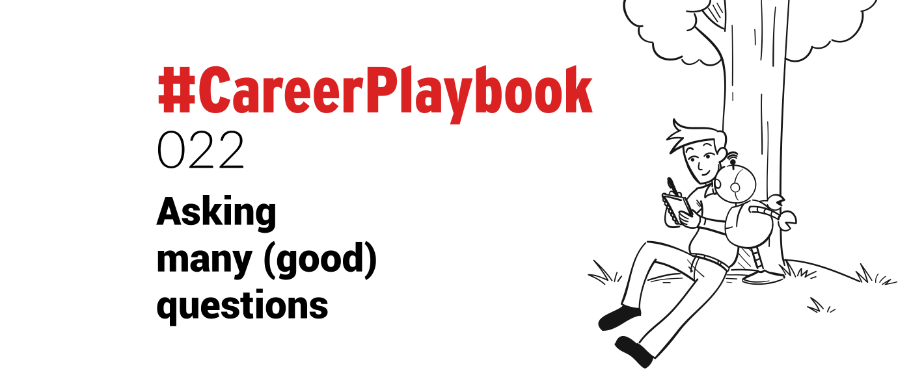

There is a famous saying:
“One who never asks questions either knows everything or nothing.”
This is very true. And the likelihood that you know everything is very slim 😁
There are no dumb questions and you should never be afraid or embarrassed to ask for confirmation or clarification on a subject.
In fact, asking good questions can be a positive thing.
It can generate trust, especially among intelligent people, when you ask good questions.
Even those at C-level and higher will appreciate questions being asked.
Why? Because they know it is better to be clear, and have an understanding of the subject at hand.
Too often, not asking questions can lead to mistakes and misunderstandings, all because someone was too self conscious, or shy, to speak up.
The fear of coming across like an imbecile often prevents people asking questions. But in my experience I have found that people like to be asked questions, they appreciate it.
Good questions can sell you.
People are usually happy to answer questions, it directs the focus of the conversation to them, and generally, people like talking about themselves.
Asking good questions can reflect well on you.
It shows you are interested and conveys your understanding of the subject being discussed.
Good questions can spark insight in the person you are asking them to; making them reflect on the topic and think it through. Possibly from an angle they have not considered before.
Challenging questions, which can push people out of their comfort zone at first, are usually appreciated, even if it is in hindsight (like good wine, they get better with time - though I would not know because I do not drink alcohol 😁).
While asking questions can be a positive thing, there is a balance that needs to be maintained. Be careful in your tone of questioning, you do not want to sound (too) critical of the proposition or plan.
Asking questions that are too abrupt or uncomfortable may annoy or alienate the person you are talking to, which does not create a positive rapport.
For me, asking good questions is a pillar of Sales.
Making sure that you fully understand your prospects wants, needs, and their concerns, creates value in their eyes.
Fully comprehending what they hope to achieve will help you in planning and executing a sales strategy.
Place yourself squarely in their shoes and ask questions that help you paint a mental image of them and their goals.
Try and envision their struggles and their trials, what their challenges may be, and attempt to ascertain their motivations.
If you were them, ask what you would want to see and hear to make you commit to a sale or contract?
What actions would you want to see, or questions would you want to hear if you were the client?
Being able to see in this way and ask questions in this manner avoids making incorrect assumptions. It helps you to see the world through their eyes.
See also:
#CareerPlaybook 011: Putting yourself in the other one’s shoes
You do not have to be the same shoe size to put yourself in their shoes, but being able to understand their mindset and perspective is beneficial.
It will help you to form a bond with your client that, over time, can lead to a better and more productive business relationship.